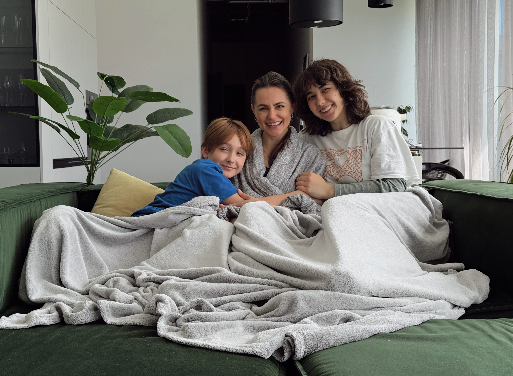
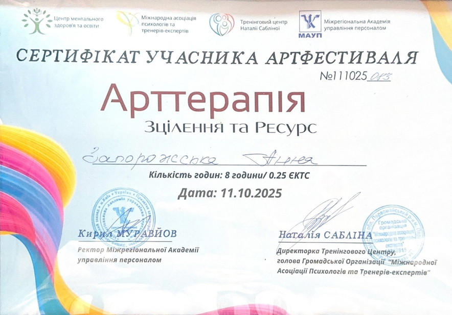
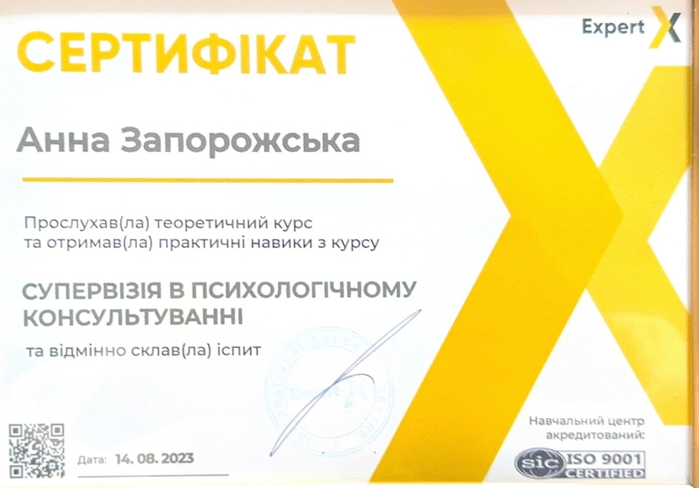
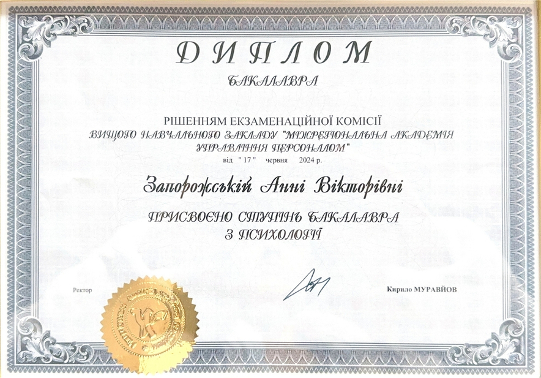
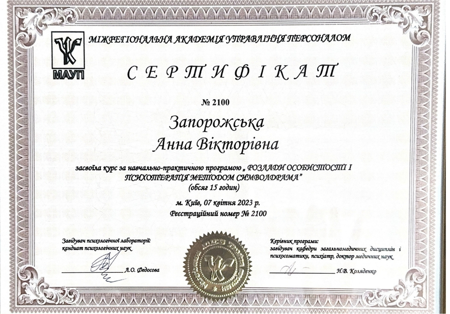

ПСИХОЛОГІЧНА ПІДТРИМКА ОНЛАЙН
Зі мною ви будете без осуду, без тиску, з повагою до вашої
історії і вашого темпу.
Мені є до тебе діло 🫶
Індивідуальні консультації, підтримка у складних життєвих періодах, робота з тривогою, виснаженням та внутрішньою напругою.
Індивідуальна терапія
Робота з тривогою
Емоційне виснаження
Підтримка у кризі
Самооцінка
Відносини
Індивідуальна терапія
Робота з тривогою
Емоційне виснаження
Підтримка у кризі
Самооцінка
Відносини

Про мене
Я поруч, коли життя змінюється і потрібно заново відчути опору
Я дипломований психолог і працюю з жінками, чоловіками, родинами та людьми, які проходять через складні життєві зміни.
У психологію я прийшла не лише через професійний інтерес, а й через власний шлях. Після 15 років шлюбу я залишилась із двома дітьми та великим внутрішнім питанням: як жити далі?
Я почала з нуля. Крок за кроком вибудувала нове життя, кар’єру, внутрішню опору і простір, у якому знову можна дихати. Саме тому в роботі для мене важливі не лише знання, а й глибоке людське розуміння того, як непросто проходити кризи, переосмислення і втрати.
У терапії я поєдную професійність, делікатність і живу присутність. Без осуду. Без поспіху. З повагою до вашого темпу, досвіду і внутрішньої правди.
Сертифікати
Професійний розвиток і навчання
Постійно навчаюсь, поглиблюю практику та розширюю інструменти, з якими працюю в терапії.







З чим я працюю
Стосунки, тривожність, самооцінка, страхи, панічні стани, внутрішні блоки та емоційна напруга. Це ті запити, з якими я можу бути поруч і підтримати вас.
Також допомагаю краще зрозуміти свої реакції, емоції та знайти внутрішню стабільність у складні періоди життя.
Мій підхід
Працюю через КПТ, символдраму, арт-терапію та тілесні практики. Підбираю методи під вас, без шаблонів. Психотерапія — це партнерство і простір без оцінок.
Я поруч, щоб підтримати вас у вашому темпі і допомогти поступово відновити контакт із собою.
З чим я працюю
Запити, з якими я можу бути поруч, підтримати і допомогти знайти внутрішню опору
Як я допомагаю
У терапії ми не просто говоримо про проблему, а поступово знаходимо спосіб повернути вам внутрішню опору
У терапії я допомагаю побачити справжні причини того, що відбувається: розкласти конфлікти на зрозумілі механізми, навчитися взаємодіяти зі своїми емоціями та будувати діалог без руйнування себе й іншого.
Я не просто підсвічую проблеми, а даю конкретні інструменти, які допомагають повернути внутрішню опору і поступово навчитися самостійно керувати своїм життям та стосунками. Ви не самі 🫶